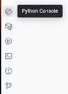
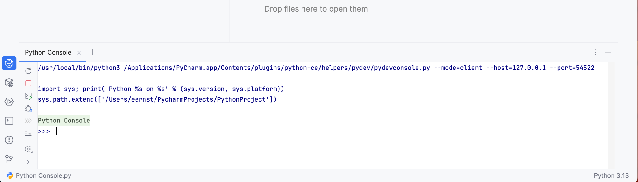
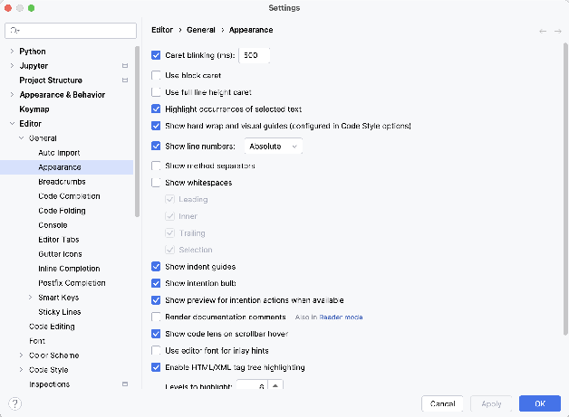

The Python Console is a place to try out new commands and see how they work, and to have a conversation with Python where you type in commands and it immediately tells you what they do. To open a Python Console, click on the Python Console button in the lower left corner of the PyCharm window.

You can then type Python statements at the >>> prompt.

PyCharm has a boggling array of preferences you can set. First, let’s import the basic settings we need for COMP 123.
Now let’s do a quick check on the settings you just imported and handle some that aren’t configured via the import. Navigate to File > Settings.
Feel free to explore, but for now you might check out the Editor’s General Appearance preferences and add line numbers (PyCharm -> Settings -> Editor -> General -> Appearance), and make sure that “Show indent guides” is selected:

Three changes you need to make are the following:
You can change the colors used in the editor by looking under Appearance & Behavior -> Appearance. Here you can set the theme. Some people prefer a light theme while others prefer dark. Feel free to explore!